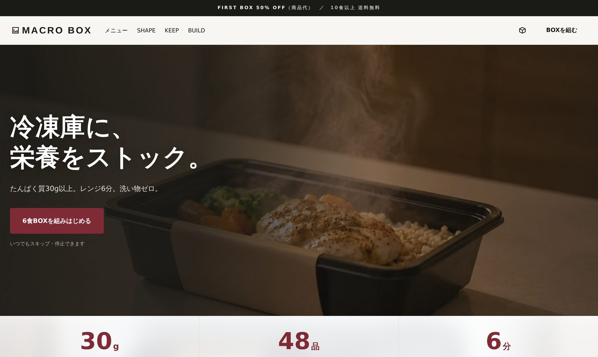
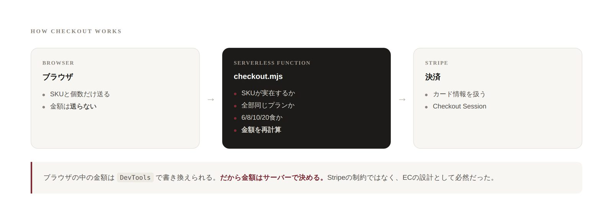
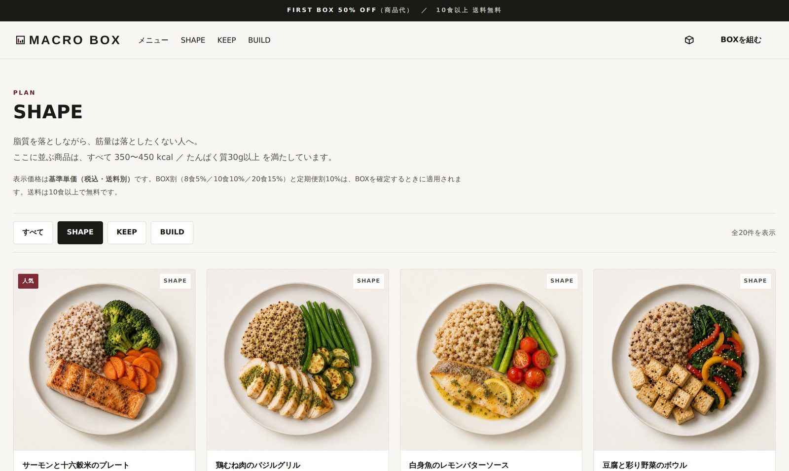
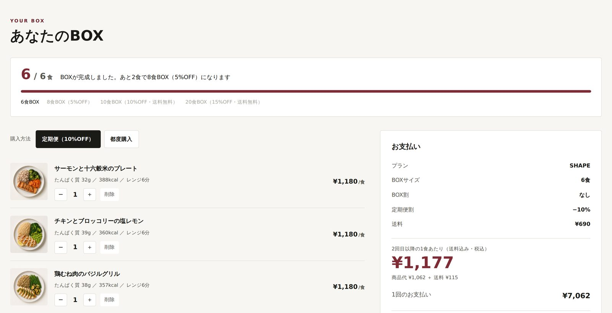
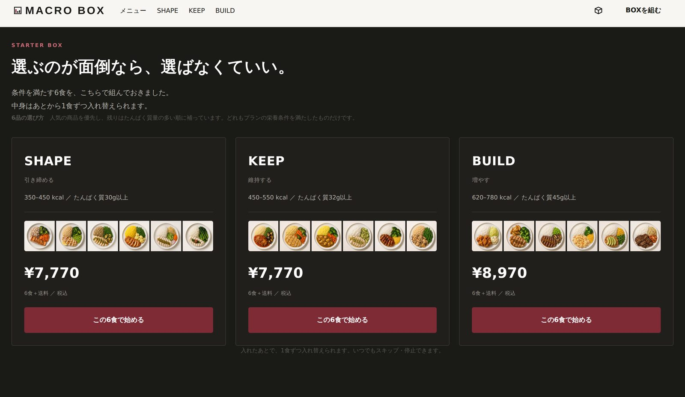
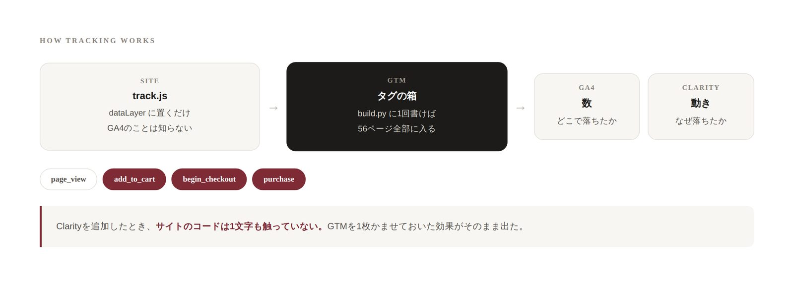
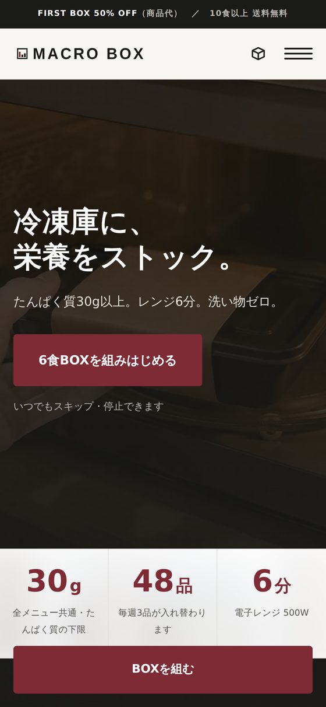
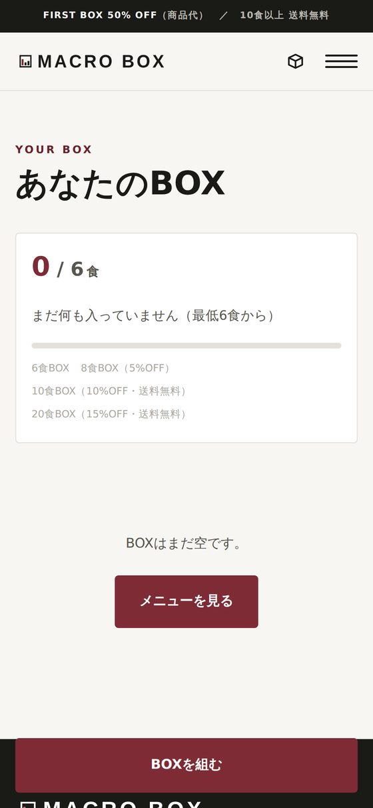

冷凍ミール宅配「MACRO BOX」を、WordPressを使わずに一から作り直しました。デザイン・コピー・商品データはWordPress版とまったく同じ。違うのは実装だけなので、2つを並べると技術の差だけが比較できます。Stripeでの決済と、GA4／GTM／Clarityでの計測まで実際に動いています。
I rebuilt MACRO BOX, a frozen meal subscription, without WordPress. The design, copy and product data are identical to the WordPress version — only the implementation differs — so the two can be compared on technology alone. Payments run through Stripe, and behaviour is measured with GA4, GTM and Clarity.

最初にWordPress＋WooCommerceで作ったMACRO BOXは、フォルダごと467MBありました。48品の商品写真が530ファイルに増え、動くのにPHPとデータベースが要る。「このサイトに、本当にそこまで必要だろうか」というのが出発点です。
The first version of MACRO BOX, built on WordPress and WooCommerce, weighed 467MB. Forty-eight product photos had multiplied into 530 files, and it needed PHP and a database just to run. The question was simple: does this site actually require all of that?
ただ、作りはじめてすぐに、本当の課題は容量ではないと分かりました。静的サイトで、そもそも決済ができるのか。ここが分かっていませんでした。
It became clear early on that size wasn't the real question. Can a static site take payments at all? That was the part I didn't know.
カートも合計金額もブラウザの中にあります。ブラウザの中にあるものは、見ている人が開発者ツールで自由に書き換えられます。合計を 1 にすれば、¥7,062のBOXが¥1で買えてしまう。
The cart and the total live in the browser — and anything in the browser can be rewritten from DevTools. Set the total to 1 and a ¥7,062 box costs one yen.
なので、決済のときだけサーバーが必要になります。サーバーレス関数を1本置き、ブラウザからはSKUと個数だけを送って、金額はそこでゼロから計算し直しています。ブラウザが計算した金額とは照合すらしません。見る必要がないからです。
So checkout — and only checkout — needs a server. I added a single serverless function: the browser sends SKUs and quantities, nothing else, and the amount is recalculated there from scratch. The browser's figure is never even compared against it. There's no reason to look at it.

存在しないSKUを送りつけられても通さない。
A fabricated SKU never reaches Stripe.
プランごとに単価が違うため、混在すると割引計算が成立しない。
Plans have different unit prices, so mixing them breaks the discount logic.
6 / 8 / 10 / 20食のいずれかでなければ受け付けない。
Only 6, 8, 10 or 20 meals are accepted.
偽のSKU、プラン混在、7食、個数マイナス — すべて関数の手前で止まりました。
Fake SKUs, mixed plans, seven meals, negative quantities — every one was rejected before reaching Stripe.
WordPressはアクセスのたびにPHPがページを組み立てます。ここでは同じものを、作るときに1回だけ組み立ててHTMLとして書き出しました。商品マスタを直して python3 build.py を実行すると、56ページが数秒で再生成されます。
WordPress assembles a page on every request. Here the same pages are assembled once, at build time, and written out as HTML. Edit the product data, run python3 build.py, and all 56 pages regenerate in seconds.
| WordPress版 / WordPress | 静的サイト版 / Static | |
|---|---|---|
| ページの作られ方How pages are made | アクセスのたびにPHPが組み立てPHP builds on every request | 作るときに1回だけOnce, at build time |
| 商品データProduct data | MySQL | products.json（18KB） |
| カートCart | WooCommerce | 自作JS＋localStorageOwn JS + localStorage |
| 必要なものRequirements | PHP・MySQL・WordPress | なし（HTMLを置ける場所だけ）None — just somewhere to put HTML |
| サイズSize | 467MB | 9.5MB |

「1つのBOXに複数プランは混ぜられません」というルールがあります。WordPress版ではFAQに文章で書いていましたが、こちらではコードで効かせました。違うプランを入れようとすると、その場で止まって理由が出ます。
"You can't mix plans in one box" is a rule of the service. In the WordPress version it lived in the FAQ as prose; here it's enforced in code — try to add a meal from another plan and it stops, with the reason.
BOX進捗バーも同じ考え方です。6食で終わりにせず、次のサイズまで案内します。進捗の表示が、そのままBOX割の説明になるようにしました。「あと2食で8食BOX（5%OFF）になります」と出ることで、価格表を読ませずに割引を理解してもらえます。
The progress bar works the same way. It doesn't stop at six — it points to the next size, so the progress display doubles as the explanation of the discount. "Two more for an 8-meal box (5% off)" teaches the pricing without a price table.

トップの「おすすめ6食BOX」には、実際にBOXへ入る6品のサムネイルを並べています。当たり前に見えますが、ここは表示側（Python）と動作側（JavaScript）が別のコードなので、放っておくとズレます。
The starter box on the home page shows thumbnails of the six meals that actually go in. Obvious as that sounds, the display is Python and the behaviour is JavaScript — two separate pieces of code that will drift apart if left alone.
両方に同じ選定ロジック（人気を優先し、残りはたんぱく質量の多い順）を書き、3プランとも一致することをプログラムで照合しました。実装より先にコピーを書いていたら、コードが持っていない選定基準を謳ってしまうところでした。
I wrote the same selection logic into both — popular items first, then by protein — and verified programmatically that all three plans match. Had the copy been written before the code, the page would have claimed a selection rule the code didn't have.

サイトに入れたのはGTMのコード1つだけです。GA4もClarityも、GTMの管理画面から追加しています。実際、Clarityを足したときにサイトのコードは1文字も触っていません。
Only one snippet lives in the site: Google Tag Manager. GA4 and Clarity are added from the GTM dashboard — when Clarity went in, not a single character of site code changed.

ECで意味のある3つのイベント（add_to_cart / begin_checkout / purchase）を dataLayer 経由でGTMに渡しています。purchase には transaction_id と、定価ではなく実際に請求された金額（定期便の初回は半額）を送りました。定価を送ると売上が水増しになるためです。
Three commerce events — add_to_cart, begin_checkout and purchase — are pushed to GTM through the dataLayer. The purchase event carries a transaction_id and the amount actually charged rather than the list price, since the first subscription box is half off. Sending list price would inflate revenue.
このサイトで一番測る価値があるのは、「6食ちょうどにしないと金額が出ない」という仕様が親切なのか不親切なのかです。自分で決めた設計を、自分で検証できる状態にしました。
The most interesting thing to measure here is whether "no price until exactly six meals" helps or hinders — a design decision I made, now testable against real behaviour.
レビューで「スマホで左右にブレる」と指摘を受けました。調べると、冷凍庫サイズを4列で並べたブロックで STACKABLE という1語が375px幅で縮まず、23pxはみ出してページ全体に横スクロールを発生させていました。
A reviewer reported the page wobbling horizontally on mobile. The cause: in a four-column block of freezer dimensions, the single word STACKABLE wouldn't shrink at 375px and overflowed by 23 pixels, giving the whole page a horizontal scroll.
SPでは2列に変更し、直したあと全ページ × 6サイズ（320〜768px）で総当たり検査を書いて、はみ出しがゼロであることを確認しています。同じ原因で、レビュー画像では見出しの左端が1文字切れていました。
Two columns on mobile fixed it, and I wrote a sweep across every page at six widths (320–768px) to confirm zero overflow. The same bug had been clipping the first character of a heading in the review screenshots.


SPでは動画の暗さを横方向ではなく縦方向にかけ直しています。横に逃げ場がないぶん、文字の後ろだけを暗くする手が使えないためです。
On mobile the video overlay runs vertically rather than horizontally — there's no room to darken only the side the text sits on.
Stripeの制約ではなく、ECの設計として必然でした。「静的サイトで全部できる」と思っていたので、ここが一番の発見です。
Not a Stripe limitation — a structural fact of e-commerce. I had assumed a static site could do everything; this was the discovery.
価格計算はブラウザとサーバーの両方にあります。片方が壊れても、もう片方は正しい。共通化すると同時に壊れます。「画面用」と「請求用」を意図的に切り離しました。
The pricing formula exists in both browser and server. Shared, a bug breaks both at once; separated, one stays correct. Display and billing were split on purpose.
公開したつもりのサイトが、実はログイン中の自分にしか見えていませんでした。確認はシークレットウィンドウで、が習慣になりました。
A site I believed was live was visible only to my logged-in self. Checking in a private window is now a habit.
おすすめ6食の選定基準を、コードが持っていないのに文章で謳うところでした。先に実装を直してから書きました。
I nearly claimed a selection rule the code didn't implement. I changed the code first, then wrote the sentence.
デザインだけでなく、決済の接続、GA4・GTM・Clarityの設計と設置、公開まで対応できます。WordPress／Shopify／静的サイトのどれが合うかというところからご相談いただけます。
Beyond design: payment integration, GA4 / GTM / Clarity setup, and launch. I'm happy to start from the question of which stack — WordPress, Shopify or static — actually fits the project.
※ 決済はStripeのテストモードです。実際の請求は発生しません。
Checkout runs in Stripe test mode — no real charges are made.